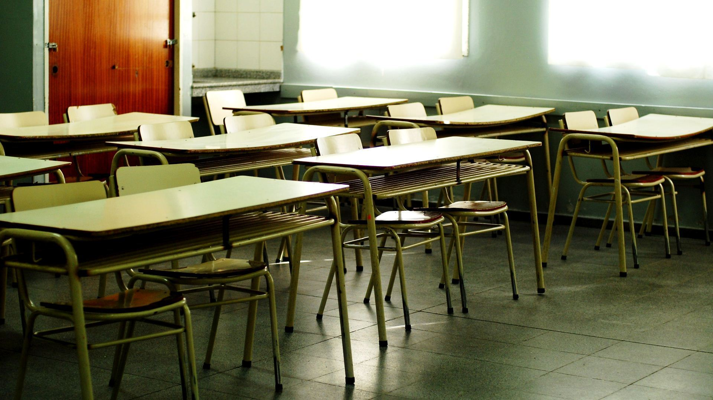

La universidad pública en el Conurbano Bonaerense en tiempos de COVID19.
Una matriz de solidaridad, integración y oportunidades.
Por: Julieta Perez | 27 Sep 2020
“Pensar que la esperanza sola transforma el mundo y actuar movido por esa ingenuidad es un modo excelente de caer en la desesperanza, en el pesimismo, en el fatalismo. Pero prescindir de la esperanza en la lucha por mejorar el mundo, como si la lucha pudiera reducirse exclusivamente a actos calculados, a la pura cientificidad, es frívola ilusión.” - Paulo Freire.
Así comienza Paulo Freire el prólogo de su memorable libro “Pedagogía de la esperanza” en el cual el histórico educador brasileño nos demarcaría un camino de lucha solidaria y transformadora para las próximas generaciones. Un párrafo que tan actual como en ese entonces ilustra la situación que deben atravesar muchos y muchas estudiantes en el Conurbano Bonaerense para poder acceder al derecho a educarse.
La educación siempre fue una herramienta de transformación. Más aún, cuando en las últimas décadas abrieron sus puertas muchas universidades en el Conurbano Bonaerense las cuales, con una oferta académica pensada para las necesidades estratégicas de nuestra Argentina, invitaron a miles de estudiantes a sumarse a la Universidad Pública. Una Universidad Pública que de no haber sido por esta situación de ubicación-cercanía de las aulas a los lugares de residencias de cientos de miles estudiantes quizás hubiera quedado como opción postergada, en base a los condicionamientos estructurales de una sociedad desigual en el que no todos ni todas tenemos las mismas oportunidades.
Se inundaron las aulas. Se llenaron de Pueblo. Muchísimas personas iniciaron su camino como la primera generación de estudiantes de su familia. Un cambio transformador. La inconmensurable verdad de que la educación transforma el presente y futuro. La solución efectiva de acceso a educación para sectores que históricamente fueron olvidados.
Sin embargo, la realidad nos duele. Muchos estudiantes no pueden sostener la virtualidad en base dificultades socioeconómicas que reflejan sustancialmente en la crisis actual. Y aunque es verdad que desde muchas Universidades y organizaciones estudiantes se han llevado adelante cientos de actividades de apoyo y contención para evitar la deserción, esto no ha alcanzado. Siguen siendo muchísimos las y los estudiantes que no pueden continuar cursando en la Universidad.
Sabemos que también una gran cantidad de estudiantes -en base a un esfuerzo inconmensurable- consiguen continuar y avanzar, y nos enorgullece esa situación. Pero, aquí no venimos a plantear un discurso que romantice la deserción en base a que “existen quienes pudieron avanzar” y olvidarnos de aquellos y aquellas que no lograron continuar. Si miramos a nuestro costado podemos recordar en este cuatrimestre a compañeros y compañeras que debieron abandonar la cursada por dificultades ajenas a ellos y ellas. Y eso, para nosotros y nosotras es inadmisible.
¿Qué queda para esos estudiantes como respuesta del sistema? Con la esperanza no alcanza. Deben tomarse decisiones políticas que no solo hablen conectividad sino también de condiciones de estudio dignas en el marco de una vida digna, de una Argentina de libres e iguales que accedan a los beneficios de un Estado presente y sólido, y no a los de uno que parezca presente pero sea tan frágil como un cartón. Se precisan acciones que promuevan equidad en el acceso, decisiones políticas donde se les muestre que no se los va a dejar de lado. Donde las burocracias Universitarias tengan empatía por sus necesidades, que no sé generalicen sus realidades cuando en una Argentina desigual claramente no todos y todas tenemos las mismas. La virtualidad vino como muchas cosas, pero le faltó empatía. Pareciera, por momentos, que muchos y muchas piensan que todo se soluciona en un Meet, Jitsi o Zoom. Inclusive hay quienes se atreven a tomar lista, cuando la accesibilidad no depende de la persona. ¿Se olvidan de que nosotros y nosotras estamos educándonos en medio de una pandemia que en el GBA tuvo una repercusión dolorosa y gravísima en nuestras vidas?
La Universidad en el Conurbano es un hecho político de transformación radical de las oportunidades. Una matriz solidaria que en vinculación dialéctica con el territorio sienta las bases de una Argentina más justa. Una realidad y oportunidad histórica. Pero, nos gustaría muchísimo, que a todo esto recién nombrado, en esta nueva virtualidad –y a lo urgente de sus problemas- podamos decir que es una Universidad que avanza hacia la virtualización de los procesos, sin olvidar lo importante que es mantener los mismos siempre como preponderantemente humanos, solidarios, empáticos e integradores.